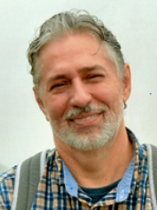

Dra. Claudia Bauzer Medeiros
 Claudia Bauzer Medeiros es profesora a tiempo completo de Bases de Datos en el Instituto de Computación de la Universidad de Campinas (Unicamp), Brasil y miembro de la Academia Brasileña de Ciencias. Ella ha recibido reconocimientos en Brasil y a nivel internacional en investigación, enseñanza y también por su trabajo en el fomento de la participación de las mujeres en actividades relacionadas con las tecnologías de la información.
Su investigación se centra en el diseño y desarrollo de bases de datos científicas. Su principal interés radica en afrontar los retos que plantean las grandes aplicaciones del mundo real, que requieren el manejo de fuentes de datos distribuidas y muy heterogéneas.
Es Comendadora de la Orden Brasileña del Mérito Científico, Dra. Honoris Causa de la Universidad Antenor Orrego, Perú, y de la Universidad Paris-Dauphine, Francia. Es miembro en general del Consejo de la ACM, miembro del Consejo de la Research Data Alliance (RDA) y del World Data System (WDS).
Tema de la conferencia: Compartiendo datos de Covid-19 – Open Science y el Repositorio FAPESP COVID-19 Data Sharing/BR.
Claudia Bauzer Medeiros es profesora a tiempo completo de Bases de Datos en el Instituto de Computación de la Universidad de Campinas (Unicamp), Brasil y miembro de la Academia Brasileña de Ciencias. Ella ha recibido reconocimientos en Brasil y a nivel internacional en investigación, enseñanza y también por su trabajo en el fomento de la participación de las mujeres en actividades relacionadas con las tecnologías de la información.
Su investigación se centra en el diseño y desarrollo de bases de datos científicas. Su principal interés radica en afrontar los retos que plantean las grandes aplicaciones del mundo real, que requieren el manejo de fuentes de datos distribuidas y muy heterogéneas.
Es Comendadora de la Orden Brasileña del Mérito Científico, Dra. Honoris Causa de la Universidad Antenor Orrego, Perú, y de la Universidad Paris-Dauphine, Francia. Es miembro en general del Consejo de la ACM, miembro del Consejo de la Research Data Alliance (RDA) y del World Data System (WDS).
Tema de la conferencia: Compartiendo datos de Covid-19 – Open Science y el Repositorio FAPESP COVID-19 Data Sharing/BR.
Dr. Francisco Tirado
 Francisco Tirado es Catedrático de Arquitectura y Tecnología de Computadores en la Universidad Complutense de Madrid. Ha trabajado en diferentes campos dentro de la Arquitectura de Computadores, Procesamiento Paralelo y Automatización del Diseño. Sus áreas de investigación actuales son algoritmos y arquitecturas paralelas, diseño de procesadores. El profesor Tirado ha sido coautor de más de 300 publicaciones.
Ha participado en la organización de más de 100 conferencias internacionales como presidente general, miembro del comité directivo, presidente del programa, miembro del comité del programa, orador invitado y presidente de la sesión. Ha sido director del CSC (Centro de Supercomputación) y del Parque Científico de Madrid. El Prof. Tirado es Catedrático de la Sociedad Española de Informática Científica (SCIE), Doctor “honoris causa” por la Universidad Nacional de Asunción, Universidad Nacional de San Agustín, Universidad Nacional de La Plata y Universidad de Almería. El Prof. Tirado es miembro senior de IEEE, miembro de la Sección de Computación de la Academia Europea y ha recibido el Premio Nacional de Informática de España 2013.
Tema de la conferencia: Evolución de las arquitecturas para HPC y BIG DATA
Francisco Tirado es Catedrático de Arquitectura y Tecnología de Computadores en la Universidad Complutense de Madrid. Ha trabajado en diferentes campos dentro de la Arquitectura de Computadores, Procesamiento Paralelo y Automatización del Diseño. Sus áreas de investigación actuales son algoritmos y arquitecturas paralelas, diseño de procesadores. El profesor Tirado ha sido coautor de más de 300 publicaciones.
Ha participado en la organización de más de 100 conferencias internacionales como presidente general, miembro del comité directivo, presidente del programa, miembro del comité del programa, orador invitado y presidente de la sesión. Ha sido director del CSC (Centro de Supercomputación) y del Parque Científico de Madrid. El Prof. Tirado es Catedrático de la Sociedad Española de Informática Científica (SCIE), Doctor “honoris causa” por la Universidad Nacional de Asunción, Universidad Nacional de San Agustín, Universidad Nacional de La Plata y Universidad de Almería. El Prof. Tirado es miembro senior de IEEE, miembro de la Sección de Computación de la Academia Europea y ha recibido el Premio Nacional de Informática de España 2013.
Tema de la conferencia: Evolución de las arquitecturas para HPC y BIG DATA
Dr. Raimundo Macêdo
Raimundo Macêdo es profesor titular en el Departamento de Ciencias de la Computación y jefe del Laboratorio de Sistemas Distribuidos (LaSiD) de la Universidad Federal de Bahía (UFBA) en Brasil. Tiene un Ph.D. en Ciencias de la Computación de la Universidad de Newcastle upon Tyne (Inglaterra).
Es el actual presidente de la Sociedad Brasileña de Computación (SBC) y consejero de la IFIP. Fue miembro del Comité Directivo de CLEI de 2011 a 2016.
El Prof. Macêdo ha participado y coordinado varios proyectos de investigación con diferentes instituciones de investigación brasileñas e internacionales, cubriendo muchos aspectos de los sistemas distribuidos confiables (algoritmos, arquitecturas e implementaciones), y formó parte del comité de programa de numerosas conferencias sobre el área de sistemas confiables, incluyendo IEEE / IFIP DSN, IEEE SRDS, LADC (Simposio Latinoamericano de Computación Dependiente), EDCC (Conferencia Europea de Computación Dependiente), entre otros. Actualmente es miembro del comité directivo de SRDS (Simposio Internacional sobre Sistemas Distribuidos Confiables). Sus intereses de investigación incluyen sistemas distribuidos confiables autogestionables y sistemas ciberfísicos.
Tema de la conferencia: Tolerancia a fallos en sistemas distribuidos dinámicos.